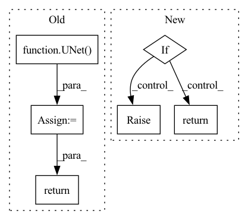

Pattern ID :36450
Before Change
// Using UNet
// For most of the Active Learning techniques, this model is the same one we used for inference
model = UNet(
dimensions=3,
in_channels=1,
out_channels=2,
channels=(16, 32, 64, 128, 256),
strides=(2, 2, 2, 2),
num_res_units=2,
norm=Norm.BATCH,
dropout=0.2) .to(self.device)
model.load_state_dict(torch.load(self.bestModelPath))
model.eval()
return model
def __call__(self, images):
After Change
return super().__call__(request, datastore)
def get_model(self, device):
if not os.path.exists(os.path.join(self.path)):
raise MONAILabelException(MONAILabelError.MODEL_IMPORT_ERROR, f"Model Path ({self.path}) does not exist")
if self.network:
network = self.network
network.load_state_dict(torch.load(self.path))
else:
network = torch.jit.load(self.path)
network = network.to(device) if device else network
network.eval()
return network
def __call__(self, request, datastore: Datastore):
if request.get("strategy") != "tta":In pattern: SUPERPATTERN
Frequency: 3
Non-data size: 6
Instances Fragment ID: 103030433
Project Name: project-monai/monailabel
Commit Name: 287d4c1eafd3ab1e364e89a4bf9f6e650c68ac77
Time: 2021-04-29
Author: salle@nvidia.com
File Name: sample-apps/segmentation_heart/lib/activelearning.py
M Class Name: MyActiveLearning
N Class Name: MyActiveLearning
M Method Name: get_model(2)
N Method Name: get_model(1)
M Parent Class: ActiveLearning
N Parent Class:
M File Name: sample-apps/segmentation_heart/lib/activelearning.py
N File Name: sample-apps/segmentation_heart/lib/activelearning.py
M Start Line: 40
M End Line: 53
N Start Line: 63
N End Line: 75
Before Change
n_timestep=opt["beta_schedule"]["n_timestep"],
linear_start=opt["beta_schedule"]["linear_start"],
linear_end=opt["beta_schedule"]["linear_end"])
model = UNet(
in_channel=opt["unet"]["in_channel"],
out_channel=opt["unet"]["out_channel"],
inner_channel=opt["unet"]["inner_channel"],
channel_mults=opt["unet"]["channel_multiplier"],
attn_res=opt["unet"]["attn_res"],
res_blocks=opt["unet"]["res_blocks"],
dropout=opt["unet"]["dropout"],
image_size=opt["diffusion"]["image_size"]
)
diffusion = GaussianDiffusion(
model,
image_size=opt["diffusion"]["image_size"],
channels=opt["diffusion"]["channels"],
timesteps=opt["beta_schedule"]["n_timestep"],
loss_type="l1", // L1 or L2
betas=beta,
conditional=opt["diffusion"]["conditional"]
)
logger.info("Model [{:s}] is created.".format("DPPM"))
print_network(model)
return diffusion
After Change
def create_model(opt):
model = opt["model"]["which_model_G"]
if model == "DDPM":
from .DDPM import DDPM as M
else:
raise NotImplementedError("Model [{:s}] not recognized.".format(model))
m = M(opt)
logger.info("Model [{:s}] is created.".format(m.__class__.__name__))
return m
Fragment ID: 103030434
Project Name: janspiry/image-super-resolution-via-iterative-refinement
Commit Name: 30eb13f9256050e6306a7defd0fc5bcefcd18496
Time: 2021-08-02
Author: jiangliangwei@tetras.com
File Name: model/__init__.py
M Class Name: AnonimousClass
N Class Name: AnonimousClass
M Method Name: create_model(1)
N Method Name: create_model(1)
M Parent Class:
N Parent Class:
M File Name: model/__init__.py
N File Name: model/__init__.py
M Start Line: 30
M End Line: 56
N Start Line: 6
N End Line: 14
Before Change
n_timestep=opt["beta_schedule"]["n_timestep"],
linear_start=opt["beta_schedule"]["linear_start"],
linear_end=opt["beta_schedule"]["linear_end"])
model = UNet(
in_channel=opt["unet"]["in_channel"],
out_channel=opt["unet"]["out_channel"],
inner_channel=opt["unet"]["inner_channel"],
channel_mults=opt["unet"]["channel_multiplier"],
attn_res=opt["unet"]["attn_res"],
res_blocks=opt["unet"]["res_blocks"],
dropout=opt["unet"]["dropout"],
image_size=opt["diffusion"]["image_size"]
)
diffusion = GaussianDiffusion(
model,
image_size=opt["diffusion"]["image_size"],
channels=opt["diffusion"]["channels"],
timesteps=opt["beta_schedule"]["n_timestep"],
loss_type="l1", // L1 or L2
betas=beta,
conditional=opt["diffusion"]["conditional"]
)
logger.info("Model [{:s}] is created.".format("DPPM"))
print_network(model)
return diffusion
After Change
def create_model(opt):
model = opt["model"]["which_model_G"]
if model == "DDPM":
from .DDPM import DDPM as M
else:
raise NotImplementedError("Model [{:s}] not recognized.".format(model))
m = M(opt)
logger.info("Model [{:s}] is created.".format(m.__class__.__name__))
return m
Fragment ID: 103030435
Project Name: janspiry/image-super-resolution-via-iterative-refinement
Commit Name: 8cf57faeeacba0fa19bca1fb3ad4bb43f2fae2bb
Time: 2021-08-02
Author: lw_jiang@foxmail.com
File Name: model/__init__.py
M Class Name: AnonimousClass
N Class Name: AnonimousClass
M Method Name: create_model(1)
N Method Name: create_model(1)
M Parent Class:
N Parent Class:
M File Name: model/__init__.py
N File Name: model/__init__.py
M Start Line: 30
M End Line: 56
N Start Line: 6
N End Line: 14